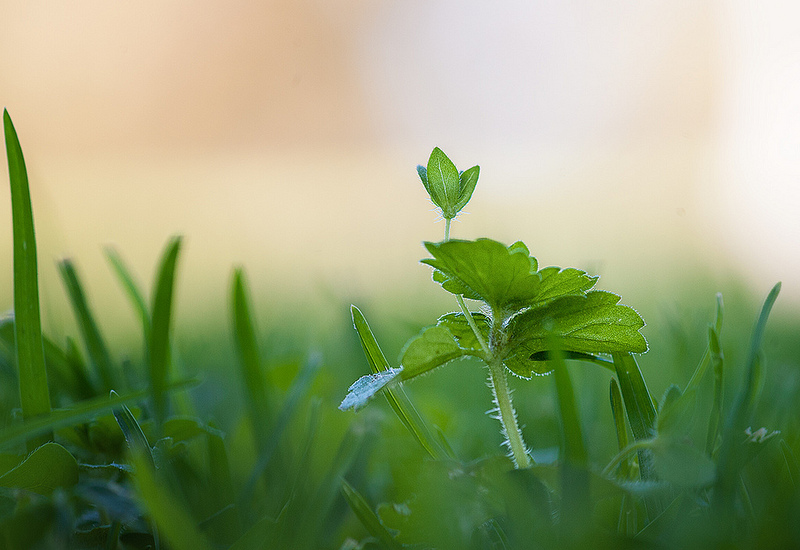

Ước Mơ

ừ nhỏ đến lớn, cái gì mình cũng nghèo nàn hết, chỉ duy có ước mơ là quá nhiều, rất phong phú và đa dạng, phải nói mình thuộc loại giầu có trong lãnh vực này (tỉ tỉ phú chứ không phải chơi). Nhưng mà viết ra hết thì cái đó mình sẽ mỏi tay "qua đời" trước khi thiên hạ lăn đùng ra chết vì bị cưỡng bức đọc toàn chuyện tào lao. Hì! hì!.. thế nên: "thôi thì thôi nhé...", ráng giả bộ hiền hiền, ít nhiều chuyện (hiếm hoi lắm) viết về ước mơ của mình trong lãnh vực nhiếp ảnh.
Một buổi sáng nắng lung linh, chẳng biết có phải người ta gọi là nắng thủy tinh không? Những tia nắng lọc qua cành lá trong xanh, chiếu xuống đám có xanh non, cái màu xanh biết. Mèng ơi! sao mà nó đẹp thế! giá như mình ăn được hết đám cỏ non đó vào bụng xí hết làm của riêng của mình nhỉ? Ấy da! mình đâu phải con bò, mà cũng chẳng dám gặp cỏ, nuốt cái đó không xong đâu. Làm gì nhỉ? chụp hình! đúng rồi! đúng quá! mình sẽ chụp nó để tối tối mang ra ngắm, ngắm được những ánh nắng lung linh buổi tối, không phải ai cũng có phải không? Wow! mình phục mình quá xá, chuyện gì cũng nghĩ ra được! thông mình thiệt! thông minh thiệt.
- Xã ơi! cho em mượn cái máy hình.
- Để làm gì?
Trời đất! đàn ông sao nhiều khi có nhưng câu hỏi vô lý hết sức, chẳng nhẽ mình mượn máy hình để dũa móng tay? Nhưng đừng dại dột nói ra ý nghĩ này vì hạnh phúc gia đình yêu dấu.
- Chụp hình!
- Chụp hình?
Dù nói qua phone nhưng mình cũng biết ngay mà! chắc chắn "Lão" đang trợn mắt, há miệng rơi nước miếng vì ngạc nhiên, ngạc nhiên cái gì? hồi đến giờ mình bị hết chồng rồi đến con: "mẹ! mẹ! quay lại cười một cái cho con chụp " bận muốn chết cũng phải quay lại, "hey! tóc mẹ bù xù quá!"..."có sao chụp vậy đi con, chụp lẹ lên mẹ còn đang mắc dọn dẹp". "Em ơi! cho anh mượn vọc dáng em một teo" Ông này! thiệt là phiên hết sức đang lúc này bắt chụp hình "đứng qua bên này mới chụp được"..." Lẹ lẹ lên anh, nồi cơm của em sắp cạn rồi kìa! ". Khà! khà! bao nhiêu cái phiền não bị ép buộc làm mẫu, bây giờ mình phải vùng lên! Cứ nghĩ đến mặt "lão" ngạc nhiên là mình đã quá!
- Ừa! em tập chụp hình, Xã chỉ cho em ngheng! ( Ngọt hết biết! bỏ mấy bịch đường phèn vào đó không ngọt sao được!)
Trên phone "Lão" ráng nín giận tận tình chỉ dẫn...cái mụ phù thủy hơi bị ngu: ".... nút tròn tròn trái bên là mở máy lên, em thấy cái nút đó chưa? Tìm cái nút bên phải...thì nhấn nhẹ để lấy focus, rồi bấm mạnh xuống là chụp, rồi cái vòng xoay...."
- Xã ơi! sao có nhiều nút quá! anh có cái máy nào chỉ một nút mở lên là chụp không? tùm lum như vậy làm sao em nhớ hết.
- Lấy giấy viết ra ghi đi em...còn không! đợi Xã về Xã chỉ cho.
Tay nắm phone, tay cặm cụi ghi chép...nhưng mắt thì nhìn vào cái máy hình...sao nó giống quái vật quá!
- Xã! tại sao phải vặn qua chữ P?...mà không là chữ A?...hì hì còn chữ S nữa?
.......
- Em vặn qua cái hình cái hoa cho nó đẹp được không Xã, em thích cái đó hơn?
- Sao em nhiều chuyện quá! hỏi lung tung, Xã nói viết cái gì thì viết xuống cái đó, làm y như vậy trước đi! Có muốn học chụp hình hay không? Phải biết nghe chứ!
Úi! "lão" nổi giận rồi! Ừa! Sao mình ngu quá, đúng là mình hơi bị ngu rồi! sorry ngheng Xã! Em sẽ cố gắng dán keo vào môi cho nó dính lại nín thinh....để cái tai em mở rộng lắng nghe hơn. ( nhưng...đàn bà nhiều chuyện là đúng rồi! Chẵng nhẽ muốn mình biến thành đàn ông sao?)
Sau cùng thì buổi học chụp hình cấp tốc trên phone cũng kết thúc, bây giờ...giờ thực hành! cầm tờ giấy ghi chép, sách máy chạy ra vườn... lay hoay làm đúng như thầy dậy.
Có cái gì sai không? thử lại một lần nữa...sao kỳ quá!... hình mình chụp ra nó không giống như những gì mình nhìn thấy....
Thử văn qua nút khác xem sao?
Sau một hồi, nắng đã lên cao, đám cỏ non không còn màu xanh biết nữa mà xanh vàng rực rỡ...mà hình của mình cỏ vẫn đen thui, hoặc cỏ xanh đục ngầu, dù mình đã thử vặn tất cả cái nút trên máy rồi. Phải làm sao?... Chẳng nhẽ lại Xã ơi! Xã à! nữa...
Ước gì mình chụp được màu đám cỏ xanh biếc nhỉ?
Ghi vào list, phải ghi vào những danh sách ước mơ của mình! Đó cũng là một ước mơ đầu tiên về nhiếp ảnh cách đây hơn 3 năm.

Trong 3 năm qua! Mình đã có bao nhiêu mơ ước, phải nói triệu triệu cái ước mơ, khi nhìn hình ảnh người khác, mình mơ chụp được những tấm như họ, họ thiệt là tài giỏi, biết chừng nào mình mới được như họ? Khi đứng trước cảnh vật thiên nhiên, tim mình đập loạn lên! đẹp quá! thật hùng vĩ!.... Yêu làm sao? Làm sao? Làm sao? Mình có thể ghi lại hết bằng máy hình nhỉ?...Mình ước làm sao chụp được nhưng gì mình nhìn thấy....lại thêm một lần ghi vào list những ước mơ.
"...Em ước mơ, mơ gì? tuổi....già bóng xế?...
.................Em ước mơ em được làm...được làm...Nữ nhiếp ảnh gia...."
Không phải! không phải!..." không ước mơ xa xôi....chỉ ước mơ....mơ...mơ.... tậu được con Nikon D4 sắp ra", "Ý quên! thêm mấy cái ống kính gì mới ra nữa chứ!" Chà! cái list của mình nó dài lê thê, bao lâu rồi vẫn chưa gạch bỏ được cái nào trong list.
Oái! cái ước mơ này phải bỏ vào cái cột nhưng cái mình sẽ tậu nếu mình trúng xố độc đắc. Ai cấm được mình mơ ước nhỉ?
."......Thật đẹp thay, thật đẹp thay......giấc mơ tiền............"..(xin lỗi Phạm Duy đã sửa nhạc của ông)
DayDreamer